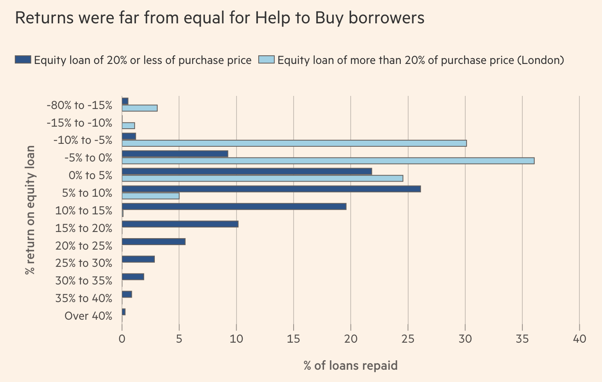

Meera Burghardt | LinkedIn | GitHub
Here is the first graph I made from the Economics Observatory which tracks imports in real US dollars from 1994 to 2022 in the DR Congo. As you can see there is large variation in exports over time, most likely due to instability and conflict.
Here is the second graph that I made on the economics observatory website. It shows GDP per capita in India from 1960 to 2022. As you can see there is a steady increase in GDP per capita, which is slightly suprising given India's growing population.
Devolution in the UK is the transfer of power from the central UK parliament to national parliaments and assemblies in Scotland, Wales, and Northern Ireland, and regional authorities in England. Following the UK's stagnant growth over the past decade, Scotland, Wales, and Northern Ireland all passed devolution legislation in 1999, while certain local authorities England still remain under the centralized UK Parliament. One argument for devolution was to stimulate productivity to help stimulate economic growth, the next two charts will be evaluating the evidence for that claim.
Relative to their 1998 levels, Scotland and Wales have accelerated past England and Northern Ireland. this shows a mixed picture of devolution, in certain areas (Scotland and Wales) devolution was followed by increased growth, while in Northern Ireland growth appeared to be relatively stagnant relative to the other nations. In England excluding London, the main areas which haven't devolved, growth has been lower compared to the other nations. This chart somewhat supports the devolution narrative.
The chart compares productivity changes from 2004 to 2023 in six local authorities in England that have devolved from the central UK parliament to local authorities and six local authorities that still fall fully under the jurisdiction of the UK parliament. The chart shows that non-devolved regions have more variance in their initial productivity levels and productivity growth with some areas like West Northamptonshire showing a 76% increase in productivity levels from a modest start, while Buckinghamshire ending in 39£ per hour, highest out of the non-devolved regions but starting from a relatively high initial productivity level. On the bottom half of the chart, the six devolved regions appear to show more consistent patterns, all starting from around 23£ per hour and increasing by about 15 over the past two decades. This chart supports the devolution narrative, as we see more consistent and stronger growth in productivity levels post devolution in the bottom six mayoral areas compared to the top six.

The previous chart was too busy and did not make the main takeaway clear enough. To fix this I separated the chart into two side by side charts and added the colored bars to make it clear which loans were repaid at a loss and which were not. I also updated the title to make the takeaway more descriptive.
The base url is https://data.api.trade.gov.uk and the other elements needed in the API are the API version (v1), the dataset id, the version of the dataset, the report id, the endpoint that returns the data, the output format, the columns, and the query mode. No API key or login is required, and the final output is a csv not JSON. The final output has a header row, one row per quota period, and one column per field which in tidy format.
https://data.api.trade.gov.uk/v1/datasets/uk-trade-quotas/versions/v1.0.0/reports/quotas-including-current-volumes/data?format=csv&query-simple&_columns=quota__order_number&_columns=quota__geographical_areas&_columns=quota__measurement_unit&_columns=quota_definition__status&_columns=quota_definition__initial_volume&_columns=quota_definition__balance&_columns=quota_definition__validity_start_date&_columns=quota_definition__validity_end_date
Link to the Google Colab notebook
I used IndexMundi's commodity price pages, which take monthly prices from the IMF and the World Bank to scrape the monthly averages in prices for eight different commodities. I did this by looping over the pages with a pause in between requests, then cleaning dates an prices, rebasing each commodity, and stacking everything into one final tidy chart. The main challenge I encountered was that all of the commodities were measured differently.